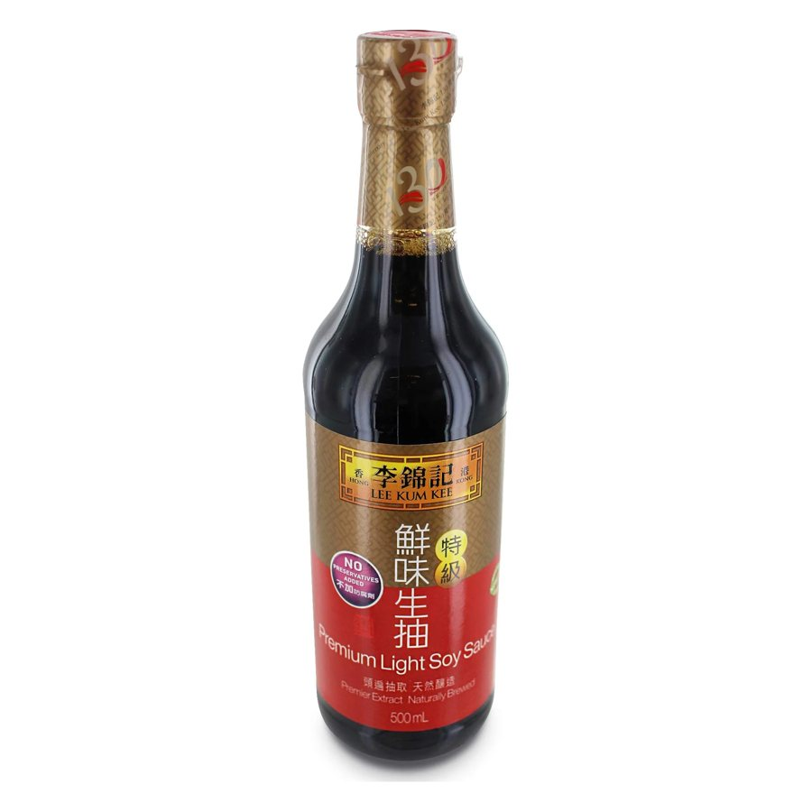
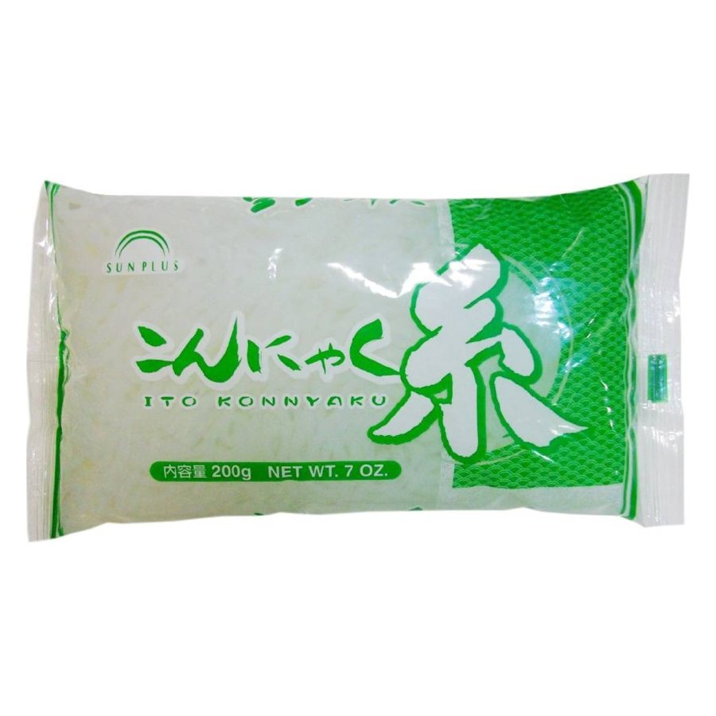
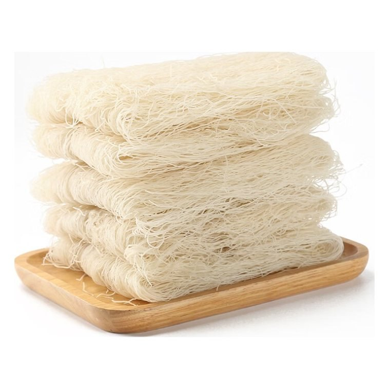
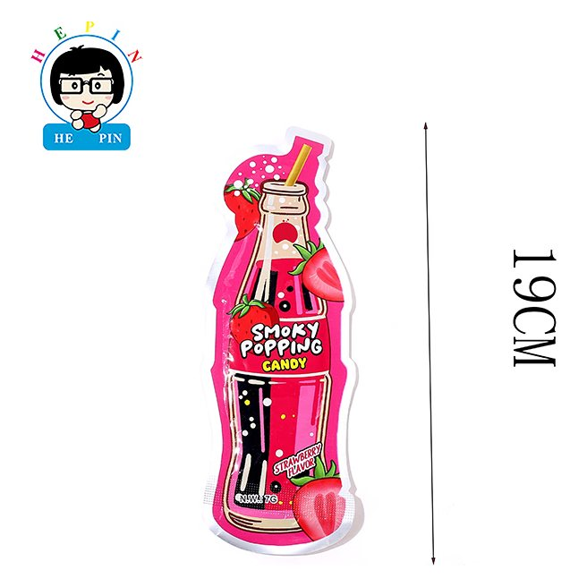

图片仅供参考，展示产品类型。
亚洲食品与零食
炒河粉 （宽米粉），干制
适合泰式炒河粉和炒菜的宽米粉。
用于泰式炒河粉、汤和炒菜的干制宽米粉，以大米制成，浸泡时间短。
技术参数
| 类型 | 宽米粉 |
|---|---|
| 状态 | 干制 |
| 海关编码（HS） | 19023010 |
欧盟标准与法规
VO (EU) 1169/2011食品信息与标签VO (EG) 396/2005农药最大残留限量VO (EU) 2023/915污染物限量VO (EG) 1935/2004食品接触材料（包装）
本类别其他产品

脆辣椒油 （油辣椒），玻璃瓶 210 克210 克玻璃瓶装脆辣椒油，含洋葱和发酵大豆，素食，可佐面条、米饭、鸡蛋和饺子。

生抽 （酿造酱油），500 毫升瓶装500 毫升瓶装酿造生抽：炒菜、腌制和蘸料的基础调味酱油。

粉丝 （绿豆粉丝），500 克袋装龙口风格的细长透明淀粉粉丝，500 克袋装，适合汤、炒菜、凉拌和越南春卷。

木薯珍珠 （波霸）黑糖味，5 分钟速煮，250 克袋装黑糖味波霸珍珠，速煮型，250 克袋装，不含奶粉，用于珍珠奶茶和甜品。

乌龙茶铁观音 （福建安溪），散茶，100克袋装带兰花香的半发酵乌龙茶，是散装茉莉绿茶之上的高端档次，100克袋装。

干香菇，整朵，100克袋装 （可搭配黑木耳）干香菇菇盖是亚洲料理的鲜味基础，100克袋装，菇盖直径3至6厘米可选。

魔芋面 （白滝），湿装袋200克超低热量的魔芋面湿装袋（200克），适合低碳水品类：冲洗、稍加热即可食用。

麻薯 （糯米糍），植物基：芝麻、花生、红豆沙，礼盒210克软糯的糯米麻薯，馅料为植物基（芝麻、花生、红豆沙），210克礼盒装：零食和礼品，可配茶。

芝麻香油 （烘焙），250 毫升玻璃瓶纯烘焙芝麻香油，透明玻璃瓶装：炒菜、面条、蘸酱和沙拉汁的提香收尾。

花椒 （红花椒），整粒，100 克袋装干红花椒（整粒）：麻辣菜肴、辣椒油和调味料不可或缺的麻香香料。

拉面 （干面），速煮，300克日式速煮干拉面。

米粉 （细米线），干制，袋装细干米粉，无麸质。

烤海苔片 （寿司海苔），10片，28克用于寿司和饭团的烤海苔片。
精炼花生油，瓶装适合煎炒的精炼花生油。

抹茶粉 （绿茶粉），烘焙级，罐装用于饮品和烘焙的细磨绿茶粉。

跳跳糖 （草莓味），袋装水果味爆裂跳跳糖。

小麦面条 （乌冬风格），干制，袋装适合汤面和炒面的无蛋干制小麦面条。